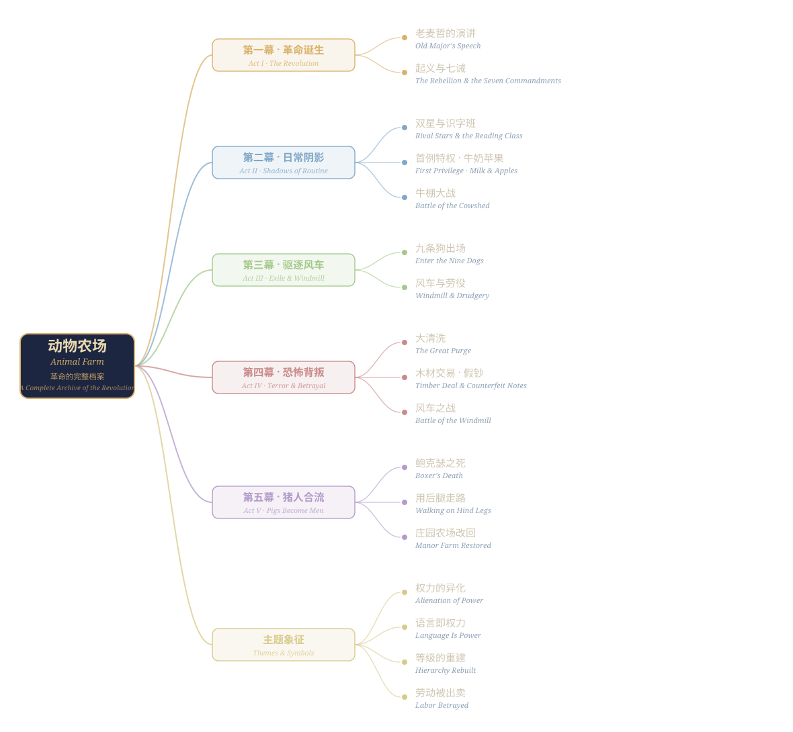

动物农场
〇 · 书籍信息
基本信息
| 书名 | 《动物农场》（Animal Farm: A Fairy Story）——副题「童话故事」是奥威尔的刻意反讽：以童话的口吻写最不童话的内容 |
|---|---|
| 作者 | 乔治·奥威尔（1903–1950），本名 Eric Arthur Blair，英国作家。曾在缅甸任殖民地警察，后赴西班牙内战前线，亲历派别清洗——本书记录的每一次「认罪」与「处决」，他都在现实中见过 |
| 出版 | 1945 年 8 月首版；全书 10 章，篇幅极短（约 3 万词），却以寓言完成了对一场革命从诞生到变质的全过程记录 |
| 体裁 | Beast fable（兽类寓言）+ allegory（政治讽喻）。动物对应历史人物，事件对应苏联史；但不依赖对照表也能作为独立故事成立——这是它成为英文精读首选的结构原因 |
| 一句话 | 七条戒律被一条条改写，一个口号被一句句翻新，最后猪与人同桌打牌、再也分不出彼此——革命没有败给敌人，败给了自己人的语言。 |
一 · 核心主题总览
十章的情节线只有一条——戒律的修改史。撑起这条线的，是四组可以互相咬合的概念：
① 权力的异化（全书主轴）
革命的全部正当性来自「人剥削动物」，而猪的统治恰好逐条复刻了这一结构：先占牛奶苹果（第 3 章），再住农舍（第 6 章），再喝酒穿衣服（第 8–10 章），最后与人类同桌（第 10 章）。剥夺的每一步都不流血，因为它每一次都附带一套「科学依据」或「爱国理由」。奥威尔的判词藏在书名轮回里：The Manor Farm 才是 its correct and original name——绕了一圈，回到了起点。
② 语言即权力（Squealer 的战场）
全书真正的杀器不是九条狗，是斯奎拉尔的嘴。口号把复杂议题压成音节（Four legs good, two legs bad），统计图表把饥饿证明成丰收，临终遗言把死亡包装成忠诚。戒律被修改的顺序值得背下来：先加状语（with sheets / without cause / to excess），再整个替换（more equal than others），最后整墙涂掉。规则文本的修订记录，比规则本身诚实得多。
③ 等级的重建
「所有动物一律平等」的七诫贴上墙不到一年，就出现了牛奶苹果的特供；到第 10 章，猪已经自称 sir，狗尊称 Napoleon 为 our Leader, Comrade Napoleon。奥威尔要证明的是：以平等为名的运动，若没有制度化的制衡与信息透明，等级会以更隐蔽也更牢固的方式重建——这一次的理由叫「智力分工」。
④ 劳动与被出卖（鲍克瑟的弧线）
鲍克瑟两句座右铭——I will work harder / Napoleon is always right——是全书最沉痛的两句台词：个人把产出最大化、把质疑归零，结局是被掌商的车拉走，换来猪的威士忌。勤劳与忠诚不能保护劳动者，能保护劳动者的只有鲍克瑟没有的东西：识字、记忆和怀疑的权利。
二 · 第一幕 革命的诞生—— 第 1–2 章 · 思想与起义 ——
第 1 章 · 老麦哲的演讲
曼纳农场（Manor Farm）的主人琼斯先生醉醺醺地忘记关鸡舍门；夜里，十二岁的种猪老麦哲在大谷仓召集全体动物开会。演讲是全书的纲领性文件，分四层推进：先诊断（动物的一生「miserable, laborious, and short」——悲惨、劳苦、短暂），再归因（人是唯一只消费不生产的生物，Man is the only creature that consumes without producing），然后开出药方（把人赶走，饥饿与过劳的根源将永远消失），最后立下纪律（动物不得模仿人的恶习，不得同类相残，「All animals are equal」）。会后全场合唱《英格兰的兽类》（Beasts of England），枪声一响，会议散了——革命的思想已经落地，只等一个时机。
◆ 语言学习 · 第 1 章
| tyrannise /ˈtɪrənaɪz/ | v. 施行暴政，横行霸道 —— 例句：No animal must ever tyrannise over his own kind.（第 1 章）同源词 tyranny /ˈtɪrəni/ n. 暴政，与 tyrant /ˈtaɪrənt/ n. 暴君一起记 |
|---|---|
| abolish /əˈbɒlɪʃ/ | v. 废除（制度、法律）—— 例句：Remove Man from the scene, and the root cause of hunger and overwork is abolished for ever.（第 1 章）名词 abolition「废除（如废奴 abolition of slavery）」高频考点 |
| miserable /ˈmɪzrəbl/ | adj. 悲惨的 —— 例句：Our lives are miserable, laborious, and short.（第 1 章）三形容词并列是演讲文体标配；注意 laborious /ləˈbɔːriəs/「费力的」与 labour「劳动」同源 |
| overthrow /ˌəʊvəˈθrəʊ/ | n./v. 推翻 —— 例句：the overthrow of the human race（第 1 章）前缀 over- + throw；名词重音在前，动词重音在后，重音区分词性是英式英语的经典规则 |
句型 ｜ Whatever goes upon two legs is an enemy.——Whatever + 动词短语作主语，引导名词性从句，全句构成「定义式判词」；老麦哲用它连发两条，节奏极强。仿写练习：Whatever comes from your screen is a suggestion, not an order.
习语 ｜ sooner or later 迟早（Sooner or later justice will be done.）；in ... clime clime /klaɪm/ 是 climate 的诗歌体古雅变体——歌词里的 land and clime 属于「凑韵优雅词」，诗歌与歌词常见，散文中少用。
第 2 章 · 起义与七诫
老麦哲死后第三天，猪群把他的教导系统化为「动物主义」（Animalism）秘密传播；母马莫丽问的问题（缎带会不会废除）暴露了旧生活的诱惑力，乌鸦摩西讲的蜜糖山则被猪斥为谎言。起义比预期来得早：六月仲夏收干草前的周日，琼斯一伙喝醉后忘了喂食，牛饿极了踢翻料槽，动物们失控般冲出去追赶雇工，琼斯夫妇仓皇出逃——没有计划、没有领袖指挥，起义是被饿出来的。第二天动物们把农场改名 Animal Farm，雪球用梯子在谷仓山墙写下七诫（Seven Commandments）：从「凡两条腿走路者为仇敌」到「所有动物一律平等」。当晚，挤出来的牛奶悄悄消失了。
◆ 语言学习 · 第 2 章
| rebellion /rɪˈbeljən/ | n. 起义，反叛 —— 例句：The Rebellion（全书大写，专名化处理，第 2 章成事）。动词 rebel /rɪˈbel/，注意两词重音位置不同 |
|---|---|
| commandment /kəˈmɑːndmənt/ | n. 戒律 —— 例句：The Seven Commandments（第 2 章）。源自圣经「十诫」的用词（Ten Commandments），奥威尔故意选宗教词汇，给革命披上教义感 |
| conceive /kənˈsiːv/ | v. 构想，设想 —— 例句：The animals were happy as they had never conceived it possible to be.（第 2 章）conceive it possible to do = 想象某事可能发生 |
| vanish /ˈvænɪʃ/ | v. 消失 —— 例句：By the evening the milk had vanished.（第 2 章）与 disappear 近义，但 vanish 更突然、更彻底；这个「消失的牛奶」是全书第一个未解之谜 |
句型 ｜ No animal shall sleep in a bed.——「No + 主语 + shall + 动词原形」是法规条文式禁令句，shall 在这里不是将来时而是「规定语气」。记住第 2 章的原版：后面每章会往句子里加状语（with sheets / without cause / to excess）——一个 shall 结构如何被悄悄扩容，是全书最精妙的语法彩蛋。
三 · 第二幕 日常与阴影—— 第 3–4 章 · 丰收与首战 ——
第 3 章 · 双星与首例特权
丰收大成功，动物们第一次吃上自己种的粮食——乌托邦的蜜月期。周日升旗开会，雪球组织各类委员会、办识字班；拿破仑却悄悄抱走九只奶狗「专管教育」——全书最重要的伏笔埋在这一句闲笔里。替智力低的动物简化口号：Four legs good, two legs bad。鲍克瑟是最强的劳动力，自订座右铭 I will work harder。猪的特权在静默中成形：猪不干活，只「指挥和监督」（directed and supervised）；牛奶掺进猪食；苹果专供猪——斯奎拉尔用「科学」论证牛奶苹果是猪脑力劳动的必需品，动物们说服了自己。第一口特权是被合理化的，不是被抢的。
◆ 语言学习 · 第 3 章
| maxim /ˈmæksɪm/ | n. 格言，座右铭 —— 例句：two suitable maxims（指 I will work harder / Napoleon is always right，第 3、5 章）。与 motto「座右铭」、proverb「谚语」辨析：maxim 偏原则性 |
|---|---|
| vivacious /vɪˈveɪʃəs/ | adj. 活泼的 —— 例句：Snowball was a more vivacious pig than Napoleon, quicker in speech and more inventive.（第 3 章）注意与 survive 的词根无关；viv- 词根=生命（vivid, vital, revive） |
| supervise /ˈsuːpəvaɪz/ | v. 监督，管理 —— 例句：The pigs did not actually work, but directed and supervised the others.（第 3 章）super-（在上）+ vise（看）；同族 supervisee / supervisor / supervision |
| unalterable /ʌnˈɔːltərəbl/ | adj. 不可更改的 —— 例句：hunger, hardship and disappointment being the unalterable law of life（第 3 章，本杰明语）。alter + able 的否定式，-able 表「可…的」 |
句型 ｜ not much of a talker, but with a reputation for getting his own way.——not much of a + 名词＝「算不上…」，随后 but with... 转折补上真正的特点。这是人物素描的高效句式：Napoleon was... not much of a talker, but with a reputation for getting his own way.（第 3 章）
习语 ｜ turn black into white 把黑说成白（颠倒黑白）——书里说斯奎拉尔「brilliant talker」，能 Squealer could turn black into white.（第 3 章）；get one's own way 我行我素、想干什么就干成什么。
第 4 章 · 牛棚大战
革命的消息传遍乡里，琼斯在红狮酒吧抱怨，邻近两农场主（皮尔金顿与弗雷德里克）各怀鬼胎却又怕自己的动物效仿。琼斯带人持棍来夺农场——牛棚大战爆发。雪球读过《恺撒战纪》，布下三线伏击：鸽子扰乱、鹅群侧袭、牛马正面合围；斯托纳少年被鲍克瑟一蹄踢倒，鲍克瑟懊悔地说 I have no wish to take life, not even human life.（我无意伤命，连人命也不愿伤）；雪球却宣布 War is war. 战死羊得到追授勋章，琼斯的枪以后每年在起义纪念日与牛棚大战纪念日各鸣放一次——战争记忆立刻被制度化为仪式。
◆ 语言学习 · 第 4 章
| campaign /kæmˈpeɪn/ | n. 战役；（政治）运动 —— 例句：an old book of Julius Caesar's campaigns（第 4 章）。一词两义必考：military campaign 战役 / election campaign 竞选活动 |
|---|---|
| decoration /ˌdekəˈreɪʃn/ | n. 勋章；装饰 —— 例句：decorations（Animal Hero First Class，第 4 章）。decoration of a room「房间装饰」与 military decorations「军功章」看语境辨义 |
| posthumously /pɒstˈhjuːməsli/ | adv. 死后，追授 —— 例句：conferred posthumously on the dead sheep（第 4 章）。形容词 posthumous；词根 post-（后）+ humus（土，入土）——「死后」的字面画面感极强 |
| retreat /rɪˈtriːt/ | v./n. 撤退 —— 例句：the men retreated in disorder（第 4 章，战败撤离）。与 withdraw 近义；注意名词加 -t：make a retreat |
习语 ｜ take to one's heels 拔腿就跑（heels 是脚后跟，跑的时候先抬脚跟）；war is war 战争就是战争——同义反复式（tautology）的冷血修辞：用同义反复把暴力的代价一笔勾销。汉语对应「战争嘛，总要死人」——这类句式一出现，说的人正准备让代价合理化。
四 · 第三幕 驱逐与风车—— 第 5–6 章 · 权斗与劳役 ——
第 5 章 · 九条狗出场
莫丽贪恋人类世界的缎带与方糖，被人偷偷喂食后从农场消失。寒冬里，两大领袖的分歧全面化：风车方案（雪球力推）、防御路线（鸽子输出革命 vs 拿破仑主张备枪）。每一次交锋都是雪球占上风——直到他讲完的瞬间，谷仓外响起一片狂吠，九条戴黄铜项圈的大狗冲进谷仓直扑雪球，把他撵出农场。那是拿破仑当年「专管教育」抱走的九只奶狗。会议制度随即废除：议题改由猪组成的委员会决定，由拿破仑主持。斯奎拉尔事后补刀：雪球早与琼斯串通。鲍克瑟消化完矛盾信息，宣布双信条：I will work harder 和 Napoleon is always right. 数周后，拿破仑突然宣布要建风车——并说那本来就是他自己的构想，雪球是偷来的。「战术，同志们，战术！」（Tactics, comrades, tactics!）——先抄后抢，再倒打一耙，权力斗争的三连招一气呵成。
◆ 语言学习 · 第 5 章
| whimper /ˈwɪmpə/ | n./v. 低鸣，呜咽 —— 例句：Napoleon... gave a sudden whimper（第 5 章，暗号）。动物发声动词是本书高频：bark 吠 / howl 嗥 / bay 长吠 / whimper 低呜——按「凶→悲」排一个声强轴 |
|---|---|
| tactics /ˈtæktɪks/ | n. 战术，策略 —— 例句：Tactics, comrades, tactics!（第 5 章）。形式复数、意义单数，类似 politics / economics；strategic strategy 是「战略」，tactics 是实现战略的具体手段 |
| brass-studded /ˈbrɑːs-ˌstʌdɪd/ | adj. 镶铜钉的 —— 例句：nine enormous dogs wearing brass-studded collars（第 5 章）。复合形容词结构：材质名词 + 过去分词，同类构词如 gold-plated、iron-fenced——英语造形容词最省力的方式 |
| lure /lʊə/ | v. 引诱，诱骗 —— 例句：Mollie was lured away（第 5 章）。lure sb away「把某人诱走」；名词 a lure「诱饵」， phishing lure「钓鱼链接诱饵」是当代高频搭配 |
句型 ｜ Whatever suggestion either of them made, the other could be counted on to oppose it.（第 5 章）——前半 whatever + 名词 + 主谓，表「无论提出什么」；后半 be counted on to do「被指望做某事」。整句是描述「僵局」的标准句式，写职场、写辩论全能用。
第 6 章 · 风车与劳役
整整一年苦役：采石场拖石、修风车、收成照做，风车成了全场的信仰工程——动物们像奴隶一样劳作，却因为「这是为自己的」而甘之如饴。口粮减了，但对外宣传「一切过剩」；与人类做买卖的禁令悄悄破例（卖鸡蛋、换钱），动物们隐隐不安，每次都被那句万能话术按下去：「你们总不想让琼斯回来吧？」——用最坏替代项吓唬人，是让任何现状都显得可以接受的不二法门。十一月风暴夜，风车整体倒塌；拿破仑冲到现场宣布：是雪球干的。处决令当场下达，重修风车，戒律在悄悄改写。
◆ 语言学习 · 第 6 章
| quarry /ˈkwɒri/ | n. 采石场 —— 例句：the stones... dragged up from the quarry（第 6 章）。注意另一义「猎物」；同形不同源：采石场的 quarry 源自拉丁语 quadrarium（方石） |
|---|---|
| ration /ˈræʃn/ | n. 配给 —— 例句：rations were reduced（第 6 章）。动词 ration sth out「按份分发」；战争文学高频词，配给制语境必会 |
| gale /ɡeɪl/ | n. 大风，强风 —— 例句：a gale（吹倒风车的那一夜，第 6 章）。风力谱系：breeze 微风 / wind 风 / gale 强风 / storm 风暴 / hurricane 飓风——按强度排序记 |
| toil /tɔɪl/ | v./n. 苦干，辛劳 —— 例句：toil（第 6 章劳役描写高频）。toil away at sth 埋头苦干；与 labour 辨析：toil 更强调「汗珠子摔八瓣」的疲惫感 |
句型 ｜ All that year the animals worked like slaves. But they were happy in their work.（第 6 章）——work like + 名词的明喻，紧接 But 反转制造张力： physically 像奴隶，psychologically 却幸福。明喻 + 反转是写报告金句的常用骨架。
习语 ｜ scare sb with the worst alternative（用最坏选项吓人）——文中原话：「Surely, surely, none of you wishes to see Jones come back?」——这类反问句在会场上几乎无法反驳，读者应当学会给它命名：虚假二选一（false dilemma）。识别话术，从命名开始。
五 · 第四幕 恐怖与背叛—— 第 7–8 章 · 清洗与交易 ——
第 7 章 · 大清洗
严冬，重修风车，口粮进一步紧缩，对外却靠温珀伪装富足。母鸡们以绝食抵抗每周卖五个鸡蛋的命令，被饿到屈服（九只母鸡死掉）。雪球成了万能背锅侠：夜袭谷仓、毁草种、通敌琼斯——编到后来连「雪球一直在农场的秘密地道里出没」都有动物相信。拿破仑召集大会「彻查」，四头猪出面供认自己早与雪球来往、并交出各类「罪行」，随即被狗当众撕断喉咙；母鸡、鹅、羊接连认罪接连被杀。克莱弗看着血迹想起第六诫，穆丽尔读墙：第六诫已被加上三个词——No animal shall kill any other animal without cause.（无故不得杀害——言下之意：有「因」即可杀）。空气里满是血腥味，「自琼斯被逐以来这里从未有过」。当晚，《英格兰的兽类》被永久禁唱——革命完成了，歌就过时了。
◆ 语言学习 · 第 7 章
| confess /kənˈfes/ | v. 供认，坦白 —— 例句：they confessed to...（第 7 章，逼供场景）。名词 confession；搭配 confess to doing sth（注意 to 是介词） |
|---|---|
| traitor /ˈtreɪtə/ | n. 叛徒 —— 例句：traitors（第 7 章处决现场）。动词 betray /bɪˈtreɪ/ 背叛 + 名词 betrayal——三词一串记；traitor 与 trader（商人）拼写只差一个字母，考试易混 |
| slaughter /ˈslɔːtə/ | v./n. 屠杀，宰杀 —— 例句：slaughtered（第 7 章）。与 kill 辨析：slaughter 指大规模、无抵抗的杀；the slaughterhouse 屠宰场在第 9 章成为鲍克瑟命运的终点——词在两章间首尾呼应 |
| expulsion /ɪkˈspʌlʃn/ | n. 驱逐 —— 例句：the expulsion of Jones（第 7 章）。动词 expel（学校开除、国家驱逐外交官都用它）；expel–expulsion 是「动词短、名词长」的经典变位 |
句型 ｜ ...the air was heavy with the smell of blood, which had been unknown there since the expulsion of Jones.（第 7 章）——heavy with「弥漫着」的搭配（air heavy with the smell/scent/atmosphere）；非限定定语从句 which had been unknown there since + 名词化（expulsion），把「从琼斯被逐以来」压成介词短语。since + 名词 > since + 从句，正式文体首选。
习语 ｜ in league with 与……勾结，串通 —— Snowball was in league with Jones from the very start!（第 7 章）。league 此处不是「联盟联赛」，而是古义「共谋」，in cahoots with 是口语版同义。
第 8 章 · 木材交易与风车之战
八月风车建成。拿破仑的崇拜仪式全面升级：称号 our Leader Comrade Napoleon、御用诗人米尼穆斯的颂诗、半版肖像。木材先议卖给皮尔金顿，忽然转向弗雷德里克——成交、收钱、欢呼；转头就发现钞票是伪造的。弗雷德里克随即带二十人携枪来袭，在风车底部钻孔炸药，全书最具象征意义的建筑被炸塌第二次。动物们死伤惨重（包括一只山羊），最终把人赶出农场，却仍然庆功、授勋、鸣枪——胜利叙事照常运转。拿破仑宿醉后，墙上第五诫变成了：No animal shall drink alcohol to excess.（不得过量饮酒——「过量」二字，禁令就有了活口）。
◆ 语言学习 · 第 8 章
| timber /ˈtɪmbə/ | n. 木材，木料 —— 例句：the timber（第 8 章交易标的）。 lumber 是美式同义词；timber 集合名词不可数 |
|---|---|
| excess /ɪkˈses/ | n. 过量 —— 例句：No animal shall drink alcohol to excess.（第 8 章）。in excess of「超过」正式写作高频；形容词 excessive「过度的」（excessive drinking） |
| cartridge /ˈkætrɪdʒ/ | n. 子弹，弹药筒 —— 例句：cartridges（第 8 章战斗描写）。词根 cart-（纸匣）+ ridge——「一小匣弹药」，与 carton（纸盒）同源记忆 |
| forge /fɔːdʒ/ | v. 伪造；锻造 —— 例句：forged banknotes / counterfeit notes（第 8 章）。forge 一词两义方向相反：锻造（正）与伪造（负），靠宾语辨义；名词 forgery「伪钞、赝品」 |
句型 ｜ 对比第 2 章原句 No animal shall drink alcohol. 与第 8 章 No animal shall drink alcohol to excess.——只加一个介词短语，禁令的效力边界就从「全禁」缩到「限禁」。规则写作的修辞学：修改者从不动主句，只动修饰语。读任何一份更新的条文，先 diff 修饰语。
六 · 第五幕 猪人合流—— 第 9–10 章 · 结局与轮回 ——
第 9 章 · 鲍克瑟之死
口粮再减、生活更苦，对外形象却一片繁荣。鲍克瑟蹄裂肺弱仍不肯歇，风车在它的加班中重建。终于一天，它拖石倒地，内脏衰竭——两天后，来了辆写着 Horse Slaughterer and Glue Boiler（屠马商与熬胶商）的车。本杰明与克莱弗追车营救，克莱弗嘶喊 Boxer! Get out! Get out! They are taking you to your death!——晚了。斯奎拉尔随即发表全套谎言：医院病逝、临终遗言（Napoleon is always right / Forward in the name of the Rebellion）、追悼宴会、花圈与悼词。动物们宁信其善——只有乌鸦与本杰明一类角色记得，那辆车是掌商的。同时农场改制共和国，拿破仑全票当选唯一候选人；乌鸦摩西带着蜜糖山的故事回归，这次猪不再驱逐，还拨它一夸脱啤酒——危机时禁绝的安慰剂，稳定时是统治的辅料。全章判词：「Somehow it seemed as though the farm had grown richer without making the animals themselves any richer—except, of course, for the pigs and the dogs.」
◆ 语言学习 · 第 9 章
| knacker /ˈnækə/ | n. 收购死畜的屠宰商 —— 例句：a knacker's van（第 9 章）。英式口语 go to the knacker's yard「进废弃场」由此而来；美式语境较少，英国文学常见 |
|---|---|
| slaughterer /ˈslɔːtərə/ | n. 屠宰商 —— 例句：Horse Slaughterer and Glue Boiler（第 9 章，车身招牌）。行业招牌三连：slaughterer 屠宰 / glue boiler 熬胶 / bone-meal dealer 骨粉商——一条产业链的黑色幽默 |
| wreath /riːθ/ | n. 花圈，花环 —— 例句：a wreath（第 9 章追悼会）。发音与 wreathe（缠绕，动词，/-ð/ 浊音）只差一个尾音；lay a wreath「敬献花圈」是纪念仪式标准搭配 |
| prosperity /prɒˈsperəti/ | n. 繁荣 —— 例句：the prosperity of the farm（第 9 章宣传口径）。形容词 prosperous；动词 prosper「兴旺」（ thrive 同义）—— Prospero《暴风雨》主角名亦同源 |
句型 ｜ Somehow it seemed as though the farm had grown richer without making the animals themselves any richer—except, of course, for the pigs and the dogs.（第 9 章）——三层结构：it seemed as though（表象）+ without making... richer（背离）+ except for（例外即真相）。最后破折号后的补刀是英文反讽写作的教科书动作：把真正的主语藏在「of course」里，假装人人皆知。
第 10 章 · 终局：庄园农场
数年过去，老一代动物相继离世，除了克莱弗、本杰明和猪，没人记得起义前的日子。农场「繁荣」：风车建成却只用来磨谷，电力从未兑现，三天工作制的许诺无人再提。猪开始用后腿走路——斯奎拉尔带队，拿破仑执鞭；羊群的新口号压过一切异议：Four legs good, two legs better! 本杰明与克莱弗爬墙读戒律，山墙上只剩一条：All animals are equal, but some animals are more equal than others.（所有动物一律平等，但有些动物比其他动物更平等。）猪穿上琼斯的衣服、拿破仑叼起烟斗；猪邀请人类来农场视察、赴宴。牌桌上，拿破仑与皮尔金顿同时打出黑桃 A，当场翻脸吵翻——同盟只维持到利益分歧的一秒之内。窗外的动物看看猪又看看人：The creatures outside looked from pig to man, and from man to pig, and from pig to man again; but already it was impossible to say which was which.全书在此收笔——农场改名 Manor Farm，名字回到了起义前的原点。
◆ 语言学习 · 第 10 章
| banquet /ˈbæŋkwɪt/ | n. 宴会（正式）—— 例句：a banquet（第 10 章，猪人同席）。feast 偏「盛宴吃喝」，banquet 偏「正式宴请」；注意 -quet 读 /kwɪt/ 不读 /kwe/ |
|---|---|
| slogan /ˈsləʊɡən/ | n. 口号 —— 例句：the sheep... chanting the new slogan（第 10 章）。chant slogans「齐喊口号」；advertising slogan 广告语——口号的生命力取决于音节数，不取决于逻辑 |
| creature /ˈkriːtʃə/ | n. 生物，造物 —— 例句：The creatures outside...（第 10 章）。create 的名词族：creation 造物 / creature 被造之物——圣经语感词，用于收束段有庄严感 |
| resemblance /rɪˈzembləns/ | n. 相似 —— 例句：the resemblance between pig and man（第 10 章主题词）。动词 resemble /rɪˈzembl/「像」（不及物、无进行时）；bear a resemblance to「与……相似」 |
习语 ｜ more equal than others——比较级 more equal 本身是语法笑话：equal（平等）是「绝对概念」，逻辑上不可分级。奥威尔故意滥用比较级，让语法错误本身成为武器：当一种语言允许「更平等」，它就允许一切。同理可解释 why be "very unique" 是病句——unique 也不可分级，写英文时要守住这类「绝对形容词」（perfect, impossible, equal, unique）。
句型 ｜ looked from pig to man, and from man to pig, and from pig to man again; but already it was impossible to say which was which.——from X to Y 的回环排比（X→Y→X→Y→X）模拟目光来回扫动，节奏越来越急；分号后 but already 陡然收束；which was which「分不清谁是谁」是固定表达，结尾三词 which was which 与开头 form 对称——全书最后一句话在语法上完成了一次「猪人互换」。
七 · 人物图鉴与成长弧线—— 主角配角 · 一张表看穿 ——
主要人物（与历史对照）
拿破仑 Napoleon——大型伯克郡种猪，「not much of a talker, but with a reputation for getting his own way」。弧线：革命领袖 → 独裁者 → 穿衣执鞭的「人」。他不擅长辩论，所以全程回避辩论：养狗（第 3 章）、放狗（第 5 章）、改规则（第 6–8 章）、办仪式（第 9–10 章）。话越少的人，动的越是大手术。
雪球 Snowball——更 vivacious、更快、更 inventive，但「没有拿破仑那种深度」（书里的说法）。读恺撒、画风车蓝图、组织牛棚大战——被逐后成为一切事故的万能背锅侠。原型托洛茨基：建设能力最强的人出局最早，出局后连天气都要归罪于他。
斯奎拉尔 Squealer——能 turn black into white 的宣传家。职能清单：解释特权（第 3 章）、篡改历史（第 5 章）、重写戒律（第 6–8 章）、包装死亡（第 9 章）。他从不撒一个无法核实的谎——他的谎永远裹着一层「数据」「科学」「大家忘了吧」的可验证外壳。
鲍克瑟 Boxer——十八掌高、力敌双马；两名座右铭 I will work harder / Napoleon is always right。弧线：最强劳动力 → 拖垮自己 → 被卖给掌商换威士忌。他是全书唯一让读者流眼泪的角色，因为他把「努力」与「忠诚」当成了唯一武器——而他缺的恰是系统分配环节上唯一算数的东西：知情权。
克莱弗 Clover——母马，鲍克瑟的伙伴。全书「记忆保管者」：每次规则被改，第一个「感觉不对」的是她，第一个爬墙去读戒律的也是她。弧线：从模糊不安 → 主动核对文本 → 但始终无力行动。她是读者的镜像——我们与她的差距只有一步：读完之后要不要做什么。
本杰明 Benjamin——驴，活得久，记住一切，「things never had been, nor ever could be much better or much worse」。全书唯一不喊口号也不上当的角色，但也是全书最消极的角色。弧线：全程犬儒 → 唯一一次破例狂奔（追鲍克瑟的车，第 9 章）——唤醒他的不是主义，是友情。
老麦哲 Old Major——十二年猪生，临终一场演讲定下全部教义；死后即被神化（头骨供奉于旗杆下——后来悄悄撤下）。他没看到任何变质，这恰是寓言的冷峻之处：思想被继承者按需解释，创始人的原话第一个被修改。
次要人物（功能位）
| 九条狗 | 暴力机器。第 3 章「专管教育」→ 第 5 章撕咬雪球 → 第 7 章处决同类。全程无名字——暴力工具不配有名字 |
|---|---|
| 莫丽 Mollie | 恋旧的母马：缎带、方糖。第 5 章叛逃——虚荣者先出局，但她至少「自己选了」；对照鲍克瑟：忠诚者被出卖 |
| 摩西 Moses | 乌鸦，蜜糖山传教者。第 3 章被驱、第 9 章回归领啤酒——宗教安慰的成本收益由统治方动态核算 |
| 琼斯 Mr Jones | 失职的农场主：酗酒、忘关鸡舍。革命正当性的全部来源——后任的每一个恶行，都要拿琼斯当参照系来豁免自己 |
| 温珀 Whymper | 人类中间人：替农场对外传递「繁荣」的数据——中介的立场属于付佣金的一方 |
| 弗雷德里克 Frederick | 平其菲尔德场主，残暴传闻缠身：先签约、后毁约、再武装入侵——用假钞买的木材，用炸药还的账 |
| 皮尔金顿 Pilkington | 福克斯伍德场主，疏懒体面：与拿破仑同场打牌又同时打出黑桃 A——体面敌人和粗暴敌人，最终在牌桌上坐同一边 |
| 羊群 the sheep | 口号复读机：从 Four legs good 到 two legs better——数量是最响的音量，口号换词它们就换词 |
| 山羊穆丽尔 / 米尼穆斯 | 认字的山羊负责「读墙」，御用诗人负责写颂诗——识字者的技能被权力雇佣。另有猫（偷懒投机）与母鸡（唯一的集体抵抗者） |
八 · 主题与象征—— 每个道具都在说话 ——
| 农场 ↔ 国家 | 曼纳农场=旧俄国；改名 Animal Farm=革命立国；终局改回 Manor Farm=制度轮回。农场的「繁荣数据」靠温珀对外播报——统计口径本身就是统治工具 |
|---|---|
| 七诫 ↔ 宪法 | 成文规则被逐条加词、替换、涂掉——一部「戒律修改史」撑起全书情节：看一个组织的真实走向，别听它说什么，盯它改了什么 |
| 风车 ↔ 工业化 | 三次兴建、两度倒塌（风暴与爆破）；建成后的用途从「发电解放动物」缩水成「磨谷赚钱」——宏大工程的许诺与最终用途之间的落差，就是抽象承诺的折价率 |
| 牛奶苹果 ↔ 特权第一口 | 全书第一项特权小到可笑（一桶奶、几个苹果），却被「科学论证」加持——腐败不是从大额开始的，是从「解释得通」开始的 |
| 狗 ↔ 暴力机器 | 九条狗从奶狗到杀手只隔两章——专管「教育」的机构最容易被私用；狗项圈上的黄铜钉（brass-studded）是奥威尔给暴力配的细节质感 |
| 蜜糖山 ↔ 来世安慰 | Sugarcandy Mountain：现世苦役的延期兑付——当统治方开始给安慰剂拨款（第 9 章一夸脱啤酒），说明它已不再指望理想，只指望稳定 |
| 牌桌 ↔ 强权外交 | 同时打出黑桃 A：规则对双方透明、双方同时作弊——冲突的终点不是谁赢，而是「规则的约束力为零」 |
| 腿与翅膀 ↔ 敌友标准 | 以身体结构划敌我（两条腿=敌），是全书最粗暴的分类法——后面每一章都在证明：敌友从来不长在腿上，长在饭桌上 |
九 · 写作手法赏析—— 奥威尔怎么写，你就能怎么学 ——
① 兽类寓言 + 童话文体（Beast fable / fairy-story register）
副题 A Fairy Story 是明面上的伪装：短句、重复句式、动物专名（Boxer、Clover 都是「老派英国农庄」气息的名字），营造童话的安全感；内容却是逐章升级的政治恐怖。文体与内容的落差本身即反讽——越读越不安的感觉不是读者敏感，是作者算好的。精读启示：判断文风先看平均句长与词汇来源（本书动词几乎全为盎格鲁-撒克逊单音节词：go, run, lock, shut——越简单越冷）。
② 讽喻映射（Allegory）
每个角色有双重身份（故事内身份 + 历史原型），奥威尔的功力在于两套身份互不干扰：不知道历史对照的读者读到的仍是完整悲剧。写作启示：讽喻要「可脱离」，贴得太死的讽喻沦为小抄。
③ 戏剧性反讽（Dramatic irony）
读者永远比动物多知道一点：牛奶去了哪（第 2 章末只有读者看见）、狗是拿破仑养的（第 3 章闲笔，第 5 章引爆）、钞票是假的（第 8 章读者先于多数动物确认）。信息差的每一次兑现都是一个「啊，原来那时就……」的瞬间——伏笔与回收的间距（第 3→5 章）设计精确。
④ 修辞的表演（Parody of rhetoric）
斯奎拉尔的演讲是政治话术的模拟标本：伪科学引证（this has been proved by Science）、恐惧替代项（surely you don't want Jones back）、数据压制（产量表格）、记忆修正（从没说过要减口粮）。奥威尔等于给读者发了一份「话术鉴定清单」——本书因此常被当作非虚构的修辞学教材。
⑤ 简单句的暴力美学
全书最著名的两句话（more equal than others / impossible to say which was which）都没有一个生僻词。奥威尔的美学：恐怖事件配最简单的句法，冷静到近乎白描，杀伤力反而最大——形容词是情绪的偷工减料，名词与动词才是证据。
⑥ 首尾同构（Ring composition）
第 1 章琼斯醉醺醺忘了关鸡舍门；第 10 章人类与猪在牌桌上吵成一团——农场的失序从「人」转移到「猪」，结构完成闭环。开头第一句（Mr Jones... had locked the hen-houses... but was too drunk to remember to shut the pop-holes）值得整句背下来：用一个失职动作开场，全书三百度的堕落就有了物理学基础。
十 · 名段欣赏—— 原文精读 · 逐段赏析 ——
十一 · 金句摘录—— 39 条 · 中英对照 · 带出处 ——
"Now, comrades, what is the nature of this life of ours?"那么，同志们，我们这种生活的本质究竟是什么？—— 第 1 章 · 老麦哲开讲
"Our lives are miserable, laborious, and short."我们的一生凄惨、劳苦而短促。—— 第 1 章 · 老麦哲的演讲
"Man is the only creature that consumes without producing."人是唯一只消费而不生产的动物。—— 第 1 章
"Man serves the interests of no creature except himself."人不为任何生灵的利益服务，只为他自己。—— 第 1 章
"Remove Man from the scene, and the root cause of hunger and overwork is abolished for ever."把人从场景中除掉，饥饿与过劳的根源便永远消除了。—— 第 1 章
"Whatever goes upon two legs is an enemy. Whatever goes upon four legs, or has wings, is a friend."凡用两条腿走路的都是敌人；凡用四条腿走路或有翅膀的，都是朋友。—— 第 1 章
"And remember also that in fighting against Man, we must not come to resemble him."还要记住：与人斗争，切不可让自己变得像人。—— 第 1 章
"No animal must ever tyrannise over his own kind."任何动物都不得对同类施行暴政。—— 第 1 章
"I know, as surely as I see this straw before my feet, that sooner or later justice will be done."正义迟早会得到伸张。—— 第 1 章
"Beasts of England, beasts of Ireland, beasts of every land and clime."英格兰的兽类，爱尔兰的兽类，普天之下每个水土的兽类。—— 第 1 章 · 《英格兰的兽类》
"All animals are equal."所有动物一律平等。—— 第 2 章 · 七诫第七条
"The animals were happy as they had never conceived it possible to be."动物们前所未有地幸福，幸福得超出了它们所能想象的极限。—— 第 2 章 · 起义次日
"Napoleon was a large, rather fierce-looking Berkshire boar... not much of a talker, but with a reputation for getting his own way."拿破仑是一头大块头、面相相当凶悍的伯克夏公猪……不太多话，却以「想方设法也要遂自己的意」闻名。—— 第 3 章
"Snowball was a more vivacious pig than Napoleon, quicker in speech and more inventive."雪球比拿破仑更活泼，说话更快，点子也更多。—— 第 3 章
"Boxer was an enormous beast, nearly eighteen hands high, and as strong as any two ordinary horses put together."鲍克瑟是个庞然大物，身高将近十八掌，力气抵得上两匹普通的马加在一起。—— 第 3 章
"I will work harder."我要更卖力地干活。—— 第 3 章 · 鲍克瑟的座右铭
"Four legs good, two legs bad."四条腿好，两条腿坏。—— 第 3 章 · 羊群口号
"Donkeys live a long time. None of you has ever seen a dead donkey."驴子的寿命长。你们谁也没见过一头死驴。—— 第 3 章 · 本杰明
"Hunger, hardship and disappointment... the unalterable law of life."饥饿、困苦与失望……是生活不可更改的定律。—— 第 3 章 · 本杰明
"Milk and apples (this has been proved by Science, Comrades) contain substances absolutely necessary to the well-being of a pig."牛奶和苹果（同志们，这是被科学证明了的）含有对猪的福祉绝对必需的物质。—— 第 3 章 · 斯奎拉尔
"Squealer could turn black into white."斯奎拉尔能把黑的说成白的。—— 第 3 章
"War is war. The only good human being is a dead one."战争就是战争。唯一的好人，是死人。—— 第 4 章 · 雪球
"I have no wish to take life, not even human life."我不愿意夺取任何生命，连人的生命也不愿意。—— 第 4 章 · 鲍克瑟
"Napoleon is always right."拿破仑永远正确。—— 第 5 章 · 鲍克瑟新增信条
"At this there was a terrible baying sound outside, and nine enormous dogs wearing brass-studded collars came bounding into the barn."就在这时，外面传来一阵可怕的狂吠，九条戴着镶铜钉项圈的巨犬扑进了谷仓。—— 第 5 章
"Whatever suggestion either of them made, the other could be counted on to oppose it."无论哪一方提出什么建议，另一方必定反对——这几乎是可以预期的。—— 第 5 章
"Tactics, comrades, tactics!"战术问题，同志们，纯粹是战术问题！—— 第 5 章 · 斯奎拉尔
"All that year the animals worked like slaves. But they were happy in their work."那一年，动物们像奴隶一样干活，但他们干得心甘情愿。—— 第 6 章
"No animal shall sleep in a bed with sheets."任何动物不得铺床单睡在床上。—— 第 6 章 · 第四诫（被加词）
"No animal shall kill any other animal without cause."任何动物不得无故杀害其他动物。—— 第 7 章 · 第六诫（被加词）
"The air was heavy with the smell of blood, which had been unknown there since the expulsion of Jones."空气里凝着浓重的血腥气——自从琼斯被逐以来，这样的气味从未有过。—— 第 7 章
"No animal shall drink alcohol to excess."任何动物不得过量饮酒。—— 第 8 章 · 第五诫（被加词）
"Napoleon was now never spoken of simply as 'Napoleon'. He was always referred to in formal style as 'our Leader, Comrade Napoleon'."如今再没有人只叫他「拿破仑」——提到他，总要用正式称谓：「我们的领袖，拿破仑同志」。—— 第 9 章
"Somehow it seemed as though the farm had grown richer without making the animals themselves any richer—except, of course, for the pigs and the dogs."不知怎的，农场似乎富起来了，动物们自己却并没有富——当然啦，猪和狗除外。—— 第 9 章
"Boxer! Get out! Get out! They are taking you to your death!"鲍克瑟！快出来！快出来！他们要送你去死！—— 第 9 章
"Four legs good, two legs better!"四条腿好，两条腿更好！—— 第 10 章 · 羊群新口号
"All animals are equal, but some animals are more equal than others."所有动物一律平等，但有些动物比其他动物更平等。—— 第 10 章 · 墙上仅存的戒律
"Henceforward the farm was to be known as 'The Manor Farm'—which, he believed, was its correct and original name."从今以后，农场将改称「曼纳庄园」——他相信，这才是它本来的、正确的名字。—— 第 10 章
"The creatures outside looked from pig to man, and from man to pig, and from pig to man again; but already it was impossible to say which was which."外面的生灵从猪望到人，从人望到猪，又从猪望回人；但已经不可能分清，谁是猪，谁是人。—— 第 10 章 · 全书终句
十二 · 拓展阅读—— 原文 · 词条 · 译文 ——
作者与本书
- Animal Farm · 英文维基百科 —— 出版史与「角色—历史」对照总表
- George Orwell · 英文维基百科 —— 生平与创作谱系（《一九八四》的姊妹读法）
- 《动物庄园》· 中文维基百科 —— 中文译名流变与译本情况
- 《动物庄园》· 百度百科 —— 中文世界的基本词条
- SparkNotes · Animal Farm —— 章节概要、人物表与主题分析（英文学习伴侣）
核心意象词条
- Seven Commandments · 英文维基百科 —— 七诫逐条修改史，全书情节的骨架文件
- Napoleon (Animal Farm) · 英文维基百科 —— 拿破仑的角色分析与历史原型
- Boxer (Animal Farm) · 英文维基百科 —— 鲍克瑟：劳动者的双重座右铭
- Battle of the Cowshed · 英文维基百科 —— 牛棚大战的战术细节与史实对应
- Beasts of England · 英文维基百科 —— 全书主题歌：创作、禁唱与替换
延伸与延伸阅读
- The Orwell Foundation —— 奥威尔基金会：全集、政论与奖项
- 豆瓣 · 各中译本检索 —— 对照不同译本的翻译处理
- 知乎 · 本书相关讨论 —— 读者讨论与延伸书单
十三 · 个人感悟与心得—— 语言 · 规则 · 记忆 · 三点心得 ——
读《动物农场》：三点心得
其一，规则文本的「修订记录」比规则本身诚实，这是一切阅读与合规的元方法。全书的情节引擎只有一台：七诫被三次加词（with sheets / without cause / to excess）、一次整体替换（more equal than others）、最后一次涂掉。每一次修改都有斯奎拉尔式的合理解释，每一次解释都拖着一个更大的实际变动。落到自己的动作上很具体：看任何一份规则、条款、方案，别只读最新版——把历史版本调出来逐条对比修改点，改动处就是利益所在处。读合同如此，读平台协议如此，读公司新规章也如此。
其二，语言先于暴力：口号把议题压扁的那一天，讨论就死了。 Four legs good, two legs bad 是全书最重要的武器，不是狗。它的威力来自三点：音节极短（可齐喊）、结构极简（无法讨论）、重复极多（羊群全天候刷屏）。等到口号升级成 two legs better，连换词都发生在同一套音节里。对学习者最实在的启示：词汇的精确度就是免疫力的强度——分得清 equal 与 more equal 的语法陷阱、认得出 false dilemma 与 tautology 这类修辞套路的人，被话术带走的成本要高得多。学英文，一半学表达，一半学防御。
其三，鲍克瑟与本杰明是同一枚硬币的两面：一个用忠诚换出局，一个用清醒换旁观。鲍克瑟的悲剧常被读成「勤劳的颂歌」，其实奥威尔写的是勤劳的错配：他把全部技能点投在「拉车」这一项不可迁移的能力上，并把判断权全数上交（Napoleon is always right）。本杰明看穿一切，却在所有关键时刻选择不动——清醒而无行动，等于替冷漠付了利息，直到追鲍克瑟那辆车才第一次奔跑。两点合起来是一份个人策略：把能力投在可迁移的地方，把怀疑落成可核对的记录，然后在关键的一次上选择奔跑。克莱弗比他们俩都普通——记得不安、去爬墙核对、但想不出办法——她才是大多数读者的位置，而她的每一次「读墙」都让下一次欺骗更难一点。
一句话收束：这本书用三万个词证明了一个词的重量——equal。当「平等」可以被加上比较级，当戒律可以被加上状语，革命就只剩一个名字。读它不是为了愤怒，是为了养成两个习惯：盯修订记录，抓话术定义。Seven rules came in; seven words went out——数一数，改一改，记下来。
十四 · 一页速查（复习用）
| 全书框架 | 五幕十章：革命诞生（1–2）→ 日常与阴影（3–4）→ 驱逐与风车（5–6）→ 恐怖与背叛（7–8）→ 猪人合流（9–10）；情节引擎=七诫修改史 |
|---|---|
| 七诫变形 | ④ No animal shall sleep in a bed → + with sheets（第6章）；⑥ No animal shall kill any other animal → + without cause（第7章）；⑤ No animal shall drink alcohol → + to excess（第8章）；⑦ All animals are equal → All animals are equal, but some animals are more equal than others（第10章） |
| 口号演变 | Four legs good, two legs bad（第3章）→ Four legs good, two legs better!（第10章）；两信条：I will work harder / Napoleon is always right |
| 历史对照 | 老麦哲=思想源头（马/列）；拿破仑=斯大林；雪球=托洛茨基；斯奎拉尔=宣传机器；狗=秘密警察；风车=工业化五年计划；牛棚大战=内战与武装干涉；大清洗=莫斯科审判；弗雷德里克=德国（毁约假钞入侵）；皮尔金顿=英美；牌桌=同盟破裂 |
| 人物弧线 | 拿破仑：领袖→独裁→穿衣执鞭；鲍克瑟：最强劳动力→拖垮→被卖掌商；克莱弗：不安→读墙→无力；本杰明：犬儒→唯一一次奔跑（第9章）；莫丽：恋旧→叛逃；羊群：口号复读机 |
| 词汇 TOP12 | tyrannise 暴政 / abolish 废除 / rebellion 起义 / commandment 戒律 / maxim 座右铭 / supervise 监督 / unalterable 不可改 / tactics 战术 / ration 配给 / confess 供认 / expulsion 驱逐 / knacker 屠畜商 |
| 高频句型 | Whatever + 名词从句作主语（第1章）；not much of a X, but with Y（第3章）；be counted on to do（第5章）；heavy with + 名词（第7章）；it seemed as though + without doing（第9章）；from X to Y 回环（第10章） |
| 习语清单 | sooner or later / turn black into white / get one's own way / take to one's heels / in league with / to excess / to one's death / which was which / lay a wreath |
| 修辞手法 | 兽类寓言+童话文体反差 / 讽喻双身份 / 戏剧性反讽（信息差） / 话术模仿（伪科学、恐惧替代项） / 简单句白描恐怖 / 首尾同构（ring composition） |
| 符号系统 | 牛奶苹果=特权第一口；brass-studded collars=暴力制服；蜜糖山=来世安慰剂；黑桃A=规则约束力归零；Manor Farm 改名=历史倒放回原点 |
| 精读策略 | 三遍法：一遍抓情节（每章末回读戒律区）/ 二遍抓语言（词汇+句型卡）/ 三遍抓结构（对照开头找呼应）；对照 SparkNotes 章节表自查理解 |
| 一句话总结 | 先加状语，再换口号，最后涂墙——革命不是被推翻的，是被一条条修订掉的。 |
十五 · 全书思维导图—— 一图纵览 ——

一图纵览全书骨架 · 中英双语对照 · 手机端可左右滑动查看全图